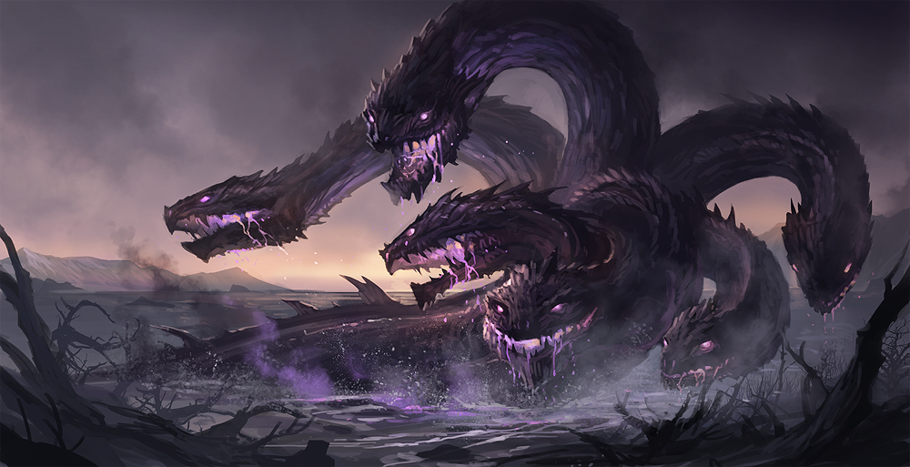
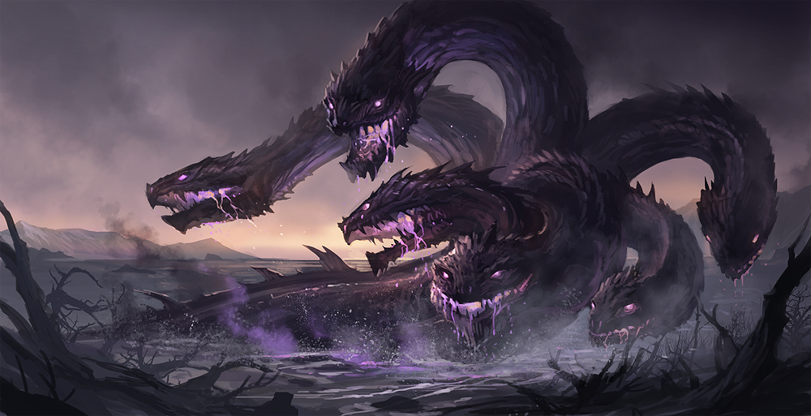

We have a wide selection of pets! We have information of each pet on sale and some background info as well.
Dragons
Dragons are perhaps the most well known of the mythical creatures. Appearing in European, East Asian, and other lore around the world, and with appearances on almost every continent, dragons have remained a symbol of power, wisdom, and destruction throughout the ages. Western dragons usually stand on both legs and spit fire. They are also more temperamental. Eastern dragons have more serpentlike bodies and are calm.


it seems to have been a new evolution from the Red Dragon.
within volcanoes. It has been immoratlized in various legends, myths, and
other literature.
rampages. It is said that a group of blue dragons can destroy an entire coastal
city within minutes. Few can tame it and even fewer can befriend one.
of the dwarf king Hreidmar and brother of Regin, Lyngheiðr, Lofnheiðr and
Otr. After being affected by the curse of Andvari's ring and gold, Fafnir became
a dragon and was slain by Sigurd.
language and means "feathered serpent". The worship of a feathered
serpent is first known documented in Teotihuacan in the first century BC or first
century AD. That period lies within the Late Preclassic to Early Classic period
(400 BC to 600 AD) of Mesoamerican chronology, and veneration of the figure
appears to have spread throughout Mesoamerica by the Late Classic
(600 to 900 AD).
of drought and adversary of Indra. In Hinduism, Vritra is identified as
an Asura. Vritra was also known in the Vedas as Ahi ("snake"). He appears as
a dragon blocking the course of the rivers and is heroically slain by Indra.
is the master of storms and also a bringer of rain. He is of equal
significance to other creatures such as Tianlong, the celestial dragon.
Tiamat is a primordial goddess of the ocean, mating with Abzu (the god of
fresh water) to produce younger gods. She is the symbol of the chaos of
primordial creation, depicted as a woman, she represents the beauty of the
feminine, depicted as the glistening one. It is suggested that there are two
parts to the Tiamat mythos, the first in which Tiamat is a creator goddess,
through a "Sacred marriage" between salt and fresh water, peacefully
creating the cosmos through successive generations. In the second
"Chaoskampf" Tiamat is considered the monstrous embodiment of primordial
chaos. Some sources identify her with images of a sea serpent or dragon.
Avians
Avian creatures are the masters of the skies. From the roc to the phoenix, they represent the untouchable, flying in the wind. Many cultures both revered and interacted with the great avian creatures of lore. These birds fly up to two miles high and can travel up to mach 5.


The roc appears in Arabic geographies and natural history, popularized
in Arabian fairy tales and sailors' folklore. Ibn Battuta (iv. 305ff) tells
of a mountain hovering in air over the China Seas, which was the roc.
enough to be able to block out the sun with its wingspan. It is considered a
giant animal/monster corresponding to archetypal creatures. Rabbis have
said that the Ziz is comparable to the Persian Simurgh, while modern scholars
compare the Ziz to the Sumerian Anzu and the Ancient Greek phoenix.
regenerated or reborn. Associated with the sun, a phoenix obtains new
life by arising from the ashes of its predecessor. According to some sources,
the phoenix dies in a show of flames and combustion, although there are
other sources that claim that the legendary bird dies and simply
decomposes before being born again. According to some texts, the phoenix
could live over 1,400 years before rebirth.
indigenous peoples' history and culture. It is considered a supernatural
bird of power and strength. It is especially important, and frequently
depicted, in the art, songs and oral histories of many Pacific Northwest
Coast cultures, and is found in various forms among the peoples of the
American Southwest, Great Lakes, and Great Plains.
The ravens appear in traditional Danish folksongs, where they are described as
originating from ravens who consume the bodies of the dead on the battlefield, as
capable of turning into the form of a knight after consuming the heart of a child,
and, alternately, as half-wolf and half-raven creatures.
in the form of a bird with a human face. They steal food from their victims
while they are eating and carry evildoers (especially those who have killed
their family) to the Erinyes. They seem originally to have been wind spirits.
Their name means "snatchers".
Hinduism and Buddhism. Garuda is the mount (vahana) of the Lord Vishnu.
Garuda is the Hindu name for the constellation Aquila. The
brahminy kite and phoenix are considered to be the contemporary representations
of Garuda. Indonesia adoptsa more stylistic approach to the Garuda's
depiction as its national symbol, where it depicts a Javanese eagle (being
much larger than a kite)
Mesopotamian religions. He was conceived by the pure waters of the Apsu and
the wide Earth, or as son of Siris. Anzu was seen as a massive bird who can
breathe fire and water, although Anzu is alternately seen as a lion-headed
eagle (like a reverse griffin).
Beasts
There are many types of beasts, some with traits from several animals. From the griffin to the manticore and sphinx, these beasts are powerful and yet also are noble. Many of them also have wings, but cannot fly as high or as fast as their avian brethren. They are stronger though, and can also run on the ground if need be.


and back legs of a lion; the head and wings of an eagle; and an eagle's talons as
its front feet. Because the lion was traditionally considered the king of the
beasts and the eagle the king of birds, the griffin was thought to be an especially
powerful and majestic creature. The griffin was also thought of as king of all
creatures. Griffins are known for guarding treasure and priceless possessions.
similar to the Egyptian sphinx. It has the body of a red lion, a human head with
three rows of sharp teeth (like a shark), sometimes bat-like wings, and a
trumpet-like voice. Other aspects of the creature vary from story to story.
It may be horned, winged, or both. The tail is that of either a dragon or a scorpion,
and it may shoot venomous spines to either paralyze or kill its victims. It devours
its prey whole and leaves no clothes, bones, or possessions of the prey behind.
hybrid creature of Lycia in Asia Minor, composed of the parts of more
than one animal. Usually depicted as a lion, with the head of a goat
arising from its back, and a tail that might end with a snake's head,
the Chimera was one of the offspring of Typhon and Echidna and a sibling
of such monsters as Cerberus and the Lernaean Hydra.
the front quarters of an eagle and the hind quarters of a horse. The first
recorded mention of the hippogriff was made by the Latin poet Virgil in
his Eclogues. Though sometimes depicted during the Classical Era and
during the rule of the Merovingians, it was used Ludovico Ariosto
in his Orlando Furioso, at the beginning of the 16th century. Within
the poem, the hippogriff is a steed born of a mare and a griffin - it is
extremely fast and is presented as being able to fly around the world and
to the moon. It is ridden by magicians and the wandering knight Ruggiero,
who, from the creature’s back, frees the beautiful Angelica.
three-headed) dog, or "hellhound" with a serpent's tail, a mane of snakes,
and a lion's claws. He guards the entrance of the Greek underworld
to prevent the dead from escaping and the living from entering. Cerberus is
featured in many works of ancient Greek and Roman literature and in works of
both ancient and modern art and architecture, although the depiction
of Cerberus differs across various renditions. The most notable difference
is the number of his heads: Most sources describe or depict three heads;
others show Cerberus with two or even just one; a smaller number of sources
show a variable number, sometimes as many as fifty or even a hundred.
the body of a lion. In Greek tradition, it has the head of a human, the
haunches of a lion, and sometimes the wings of a bird. It is mythicised
as treacherous and merciless. Those who cannot answer its riddle suffer a
fate typical in such mythological stories, as they are killed and eaten
by this ravenous monster. This deadly version of a sphinx appears in
the myth and drama of Oedipus. Unlike the Greek sphinx, which was a woman,
the Egyptian sphinx is typically shown as a man (an androsphinx). In addition,
the Egyptian sphinx was viewed as benevolent, but having a ferocious
strength similar to the malevolent Greek version and both were thought of
as guardians often flanking the entrances to temples.
the best known creatures in Greek mythology. He is a winged divine
stallion usually depicted as pure white in color. He was sired by
Poseidon, in his role as horse-god, and foaled by the Gorgon Medusa.
He was the brother of Chrysaor, born at a single birthing when his
mother was decapitated by Perseus. Greco-Roman poets write about his
ascent to heaven after his birth and his obeisance to Zeus, king of the
gods, who instructed him to bring lightning and thunder from Olympus.
(Old Norse: "Fenris wolf"), Hroðvitnir (Old Norse: "fame-wolf"), or
Vanagandr (Old Norse: "the monster of the river Van") is a monstrous
wolf. Fenrir is attested in the Poetic Edda, compiled in the 13th century
from earlier traditional sources, and the Prose Edda and Heimskringla,
written in the 13th century by Snorri Sturluson. In both the Poetic Edda
and Prose Edda, Fenrir is the father of the wolves Skoll and Hati
Hroðvitnisson, is a son of Loki, and is foretold to kill the god Odin
during the events of Ragnarok, but will in turn be killed by Odin's son
Viðarr.
Sea Creatures
The sea holds many untold marvels. Since humanity began its attempts to tame the sea, it has faced these creatures of the deep. They are very elusive but when roused from their slumber, it could spell doom. Sea creatures usually can swim very far without needing to come up for air. They require lots of water and room to freely move about.


in English, is a mythological creature shared by Phoenician and Greek
mythology, though the name by which it is recognised is purely Greek.
It was also adopted into Etruscan mythology. It has typically been
depicted as having the upper body of a horse with the lower body of a fish.
The word has become synonymous with any large sea monster or creature.
In literature (e.g., Herman Melville's Moby-Dick) it refers to great
whales, and in Modern Hebrew, it simply means "whale". It is described
extensively in Book of Job 41 and mentioned in Job 3:8, Amos 9:3,
Psalm 74:13-23, Psalm 104:26 and Isaiah 27:1.
who lured nearby sailors with their enchanting music and voices to
shipwreck on the rocky coast of their island. Roman poets placed them on
some small islands called Sirenum scopuli. In some later,
rationalised traditions, the literal geography of the "flowery" island
of Anthemoessa, or Anthemusa, is fixed: sometimes on Cape Pelorum
and at others in the islands known as the Sirenuse, near Paestum,
or in Capreae.
to dwell off the coasts of Norway and Greenland. The legend may have
originated from sightings of giant squid that are estimated to grow to
in length 12 to 15 meters(40 to 50 feet) including the tentacles. The
sheer size and fearsome appearance attributed to the kraken have made it
a common ocean-dwelling monster in various fictional works.
mythology. In some sources, Bahamut is described as having a head
resembling a hippopotamus or elephant. In Arabic mythology, Bahamut
is a giant fish acting as one of the layers that supports the earth.
In Jorge Luis Borges' Book of Imaginary Beings, Bahamut is "altered
and magnified" from Behemoth, and described as so immense that a human
cannot bear its sight; "[all] the seas of the world, placed in one of
the fish's nostrils, would be like a mustard seed laid in the desert."
a whale, a shark, or a sea monster. The sea monsters slain by Perseus
and Heracles were each referred to as a cetus by ancient sources.The term
cetacean (for whale) originates from cetus. In Greek art, cetea were
depicted as serpentine fish. The name of the mythological figure Ceto is
derived from ketos. The name of the constellation Cetus also derives
from this word.
sea monster, a dragon of the waters, the "demonic angel of the sea".
Rahab is also seen as a deity in the text. Rahab represents the primordial
abyss, the water-dragon of darkness and chaos, comparable to Leviathan
and Tiamat. Rahab later became a particular demon, inhabitant of the sea,
especially associated with the Red Sea.
a lake in the Scottish Highlands. It is similar to other supposed
lake monsters in Scotland and elsewhere, though its description varies
from one account to the next, with most describing it as large. Popular
interest and belief in the creature's existence has varied since it was
first brought to the world's attention in 1933. Evidence of its existence
is anecdotal, with minimal and much-disputed photographic material
and sonar readings.
Serpents
There are several serpentine creatures. Wily and ungraspable, they are trickers at heart. Some of these species can be poisonous and may hurt you if not trained well. They are hard to train, but can prove to be loyal pets and good home guardians. As serpents, they are cold blooded, so external heat sources are helpful to keep them active.
 



from the ancient Greek word gorgos, which means "dreadful", and appears
to come from the same root as the Sanskrit word "garg" which is defined
as a guttural sound, similar to the growling of a beast, thus possibly
originating as an onomatopoeia. While descriptions of Gorgons vary
across Greek literature and occur in the earliest examples of Greek
literature, the term commonly refers to any of three sisters who had
hair made of living, venomous snakes, as well as a horrifying visage
that turned those who beheld her to stone.
Hydra, was an ancient serpentine water monster with reptilian traits
in Greek and Roman mythology. Its lair was the lake of Lerna in the
Argolid, which was also the site of the myth of the Danaids. Lerna
was reputed to be an entrance to the Underworld and archaeology has
established it as a sacred site older than Mycenaean Argos. The Hydra
served as a kind of guard.
became a child-eating daemon. Aristophanes claimed her name derived
from the Greek word for gullet , referring to her habit of devouring
children. In the myth, Lamia is a mistress of the god Zeus, causing
Zeus' jealous wife, Hera, to kill all of Lamia's children and transform
her into a monster that hunts and devours the children of others. Another
version has Hera merely stealing away all of Lamia's children and it
being Lamia herself, losing her mind from grief and despair, who starts
stealing and devouring others' children out of envy, the repeated
monstrosity of which transforms her into a monster on its own.
of Greek mythology. The last son of Gaia, fathered by Tartarus, Typhon
was, with his mate Echidna, the father of many famous monsters.
who lives in the ocean that surrounds Midgard, the visible world. So
enormous is he that his body forms a circle around the entirety of
Midgard. He is s one of the three children of Loki and the giantess
Angrboða, along with Hel and Fenrir.
reputed to be king of serpents and said to have the power to cause
death with a single glance. According to the Naturalis Historia of Pliny
the Elder, the basilisk of Cyrene is a small snake, "being not more
than twelve fingers in length," that is so venomous, it leaves a wide
trail of deadly venom in its wake, and its gaze is likewise lethal;
its weakness is in the odor of the weasel, which, according to Pliny,
was thrown into the basilisk's hole, recognizable because all the
surrounding shrubs and grass had been scorched by its presence. It is
possible that the legend of the basilisk and its association with
the weasel in Europe was inspired by accounts of certain species of
Asiatic snakes (such as the king cobra) and their natural predator,
the mongoose.
or being, taking the form of a very great snake, specifically the king
cobra, found in Hinduism, Buddhism, Jainism and Sikhism.
present on the scarlet beast. The scarlet beast is shown being ridden
by a harlot who "reigns over the kings of the earth", (Revelation
17:18) whereas the beast of the sea is not being ridden, and is given
"power...and great authority." The seven heads of the beast represent
both seven mountains and seven kings, and the ten horns are ten kings
who have not yet received kingdoms. Of the seven kings we are told
that five have fallen, one is, the other has not yet come. We are
also told that the beast itself is an eighth king who is "of the seven",
and is going to perdition. We are also told that this beast "was,
and is not; and shall ascend out of the bottomless pit, and go into
perdition."